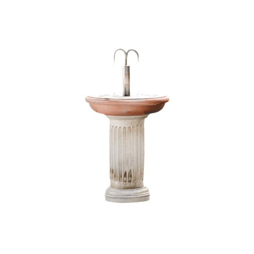

Dalla rappresentanza studentesca di Scienze Chimiche
Orari Scienze Chimiche

Lezioni, esami, mappa del campus e servizi in un unico sito. a.a. 2026-2027
Il sito degli studenti per gli studenti: gratuito e senza registrazione.

Dalla rappresentanza studentesca di Scienze Chimiche
Lezioni, esami, mappa del campus e servizi in un unico sito. a.a. 2026-2027
Il sito degli studenti per gli studenti: gratuito e senza registrazione.
La presentazione
Le diapositive per scoprire il sito, dagli orari alla mappa 3D.
Il video
Guarda il sito all'opera, passo per passo, come lo usi dal telefono.
Cosa fa
Dagli orari della settimana all'aula sulla mappa: un sito pensato per essere consultato da telefono tra una lezione e l'altra.
Anno e canale, un colore e un'icona per ogni corso, aule e orari modificabili, corsi arretrati con segnalazione delle sovrapposizioni.
Una linea del tempo con appelli e sessioni.
I libri consigliati e i link alle pagine dei corsi.
Mappa interattiva con vista 3D, per trovare aule, bar, acqua e servizi.
La guida per collegarsi in sede.
Domande frequenti e segnalazioni inviate ai rappresentanti degli studenti.
Un riferimento chiaro per chi cerca un ambiente accogliente.
Informazioni e servizi dell'Ateneo, più il carattere accessibile a scelta: OpenDyslexic, Lexend o Atkinson Hyperlegible.
Chi fa cosa, dall'Ateneo al corso di studi.
Il carattere si sceglie qui e si applica a tutto il sito, titoli compresi.
Personalizzazione
Ogni studente adatta il proprio orario: colori, icone, aule, lezioni tolte o spostate, corsi arretrati e impegni personali. L'orario così ottenuto si esporta già nella forma desiderata.

Accessibilità
Per gli studenti con dislessia o a cui la lettura risulta faticosa, il carattere del testo è selezionabile dalle Impostazioni e si applica a tutto il sito.

Provi subito: selezionando uno dei quattro caratteri, l'intera pagina lo adotta all'istante.
La mappa in 3D · beta
Dal Vecchio Edificio di Chimica al Cortile dell’azoto: orientati nel campus e scopri i luoghi da vicino.

Apri la mappa 3D completa e parti dal banchetto di Liberiamo Sapienza, di fronte al Vecchio Edificio di Chimica.
Privacy
Nella versione attuale il sito non tratta dati personali. Ciò che si salva, come le preferenze, resta nel browser di chi lo usa.
Prossimi passi
Un codice QR per ogni anno e ogni canale, per entrare nel gruppo giusto con una sola inquadratura.
Segnate direttamente sulla mappa 3D.
Aule, uffici, segreterie e distributori di ogni edificio. È in corso il reperimento delle planimetrie.
Facciate e poligoni più realistici.
Per sbloccare funzioni che richiedono un account, come blog, annunci e segnalazioni. Dipende dall'approvazione dell'Ateneo: non è ancora garantito.
Avvisi e rassegna stampa in un'unica scheda.
Community WhatsApp
Un solo QR per raggiungere la community ufficiale degli studenti di Scienze Chimiche. Il collegamento sarà attivato dopo la conferma di pubblicazione.
Passaparola
Più studenti lo usano, più il sito diventa utile. Se ti sembra comodo, mandalo ai colleghi del tuo anno e del tuo canale.
Nato da un'iniziativa spontanea degli studenti, non ha nessun costo per chi lo usa.
Non serve creare un account. Le scelte che fai, come colori, aule e corsi arretrati, restano nel tuo browser.
Pensato per essere consultato tra una lezione e l'altra, ma funziona anche da computer.
Errori, idee e segnalazioni arrivano ai rappresentanti dalla pagina Contattaci e FAQ del sito.